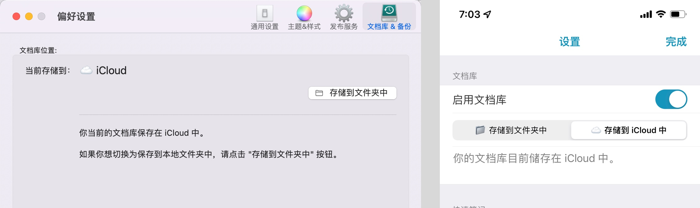
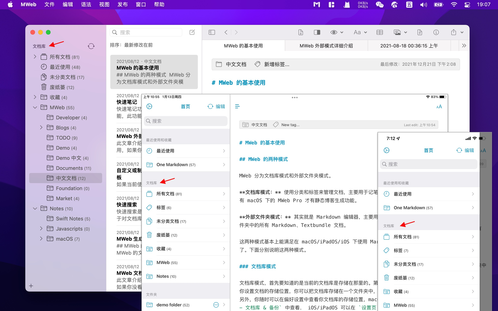
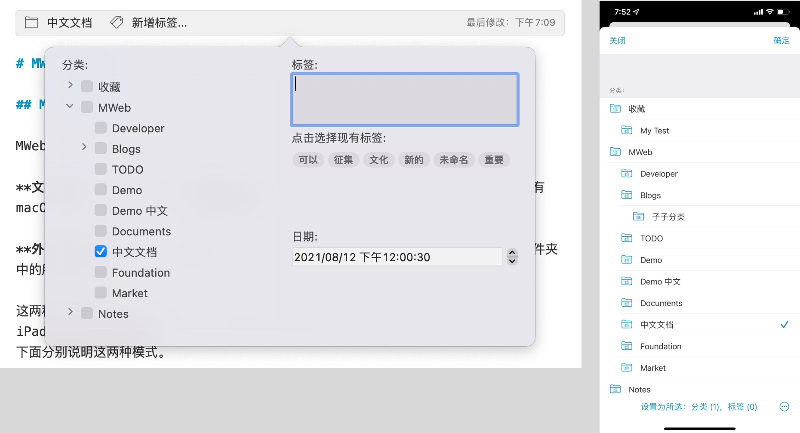
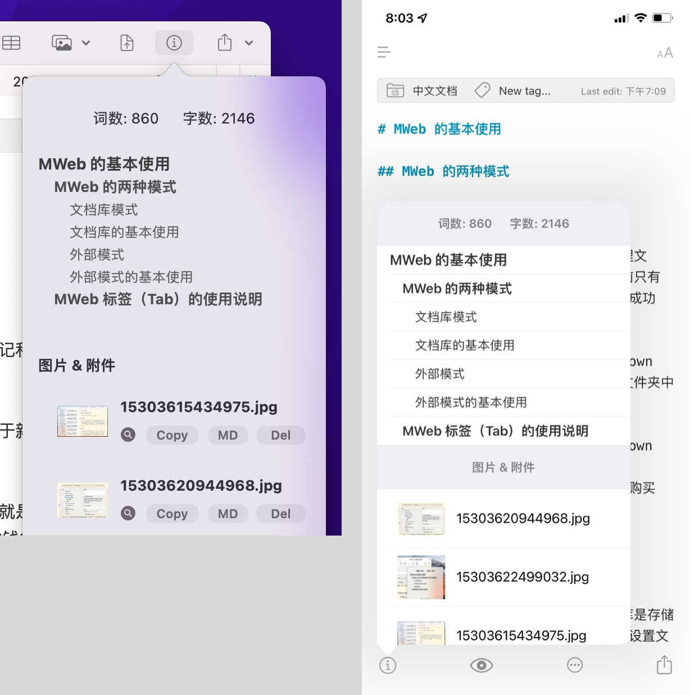
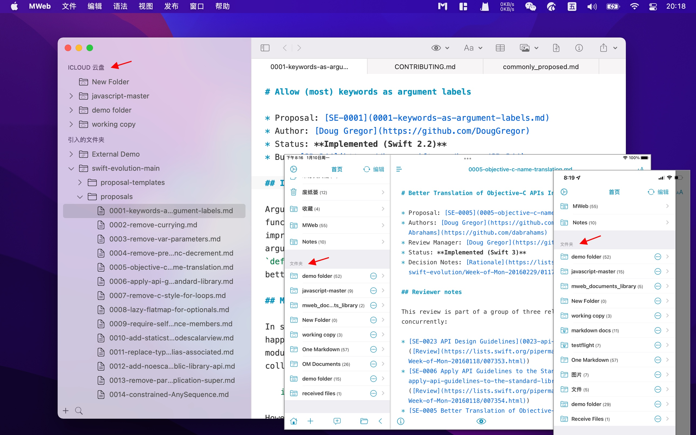
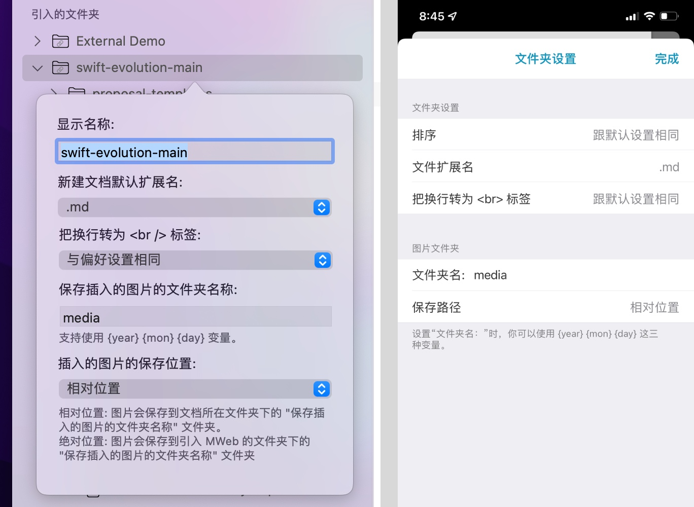
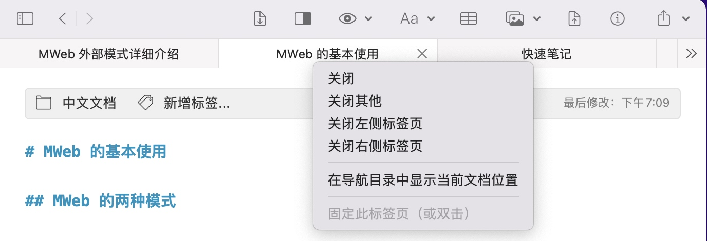

MWeb 的两种模式
MWeb 分为文档库模式和外部文件夹模式。
文档库模式： 使用分类和标签来管理文档，主要用于记笔记和静态博客生成，目前只有 macOS 下的 MWeb Pro 才有静态博客生成功能。
外部文件夹模式： 其实就是 Markdown 编辑器，主要用于新建或编辑你硬盘上的文件夹中的所有 Markdown、Textbundle 文档。
这两种模式基本上能满足在 macOS/iPadOS/iOS 下使用 Markdown 的几乎所有的需求了。下面分别说明这两种模式。
文档库模式
文档库模式，首先要知道的是当前的文档库是存储在那里的。第一次使用 MWeb 时，会让你设置文档的存储位置，你可以把文档库存储在一个文件夹中，或者存储在 iCloud 中。另外，你随时可以在偏好设置中查看你文档库的存储位置，macOS 下，可以在 偏好设置 - 文档库 & 备份 中查看， iPadOS/iOS 可以在 设置页 - 文档库 中查看。如果要想在多个设备之间同步你的文档库，建议把文档库存储在 iCloud 中。如下图是文档库存储到 iCloud 中的效果。

知道文档库是存储在那里的之后，就可以使用文档库了。
MWeb 的 macOS/iPadOS/iOS 版的文档库界面如下图所示，三个平台的界面都针对各个平台进行了深度优化。macOS 版的文档库使用独立的窗口，任何时候你可以使用快捷键 CMD + L 打开文档库，也可以使用菜单：视图 - 打开文档库 来打开文档库。iPadOS/iOS 的文档库显示在首页的 文档库 分组中。

文档库的基本使用
新增分类： macOS 中主要用右键左边的分类树来新增分类，也可以点击左下角的 “+” 按钮来新增分类；iPadOS/iOS 可以点击底部的 “+” 按钮新增分类。
新增文档： macOS 中可以用：右键分类、点击工具栏的新增文档按钮、快捷键 CMD + N 这三种方法来新增文档；iPadOS/iOS 可以点击底部的 “+” 按钮新增文档。
设置文档分类和标签： 你可以点击编辑器最上面的文档信息条来设置文档的所属于的分类、标签等信息，如下图。这个界面也可以使用快捷键 CMD + 8 来调出。

查看文档的大纲： 如下图，macOS 中，你可以点击工具栏上的 (i) 按钮来查看文档的大纲，也可以使用快捷键 CMD + 7。如果你想固定这个大纲视图，你可以直接拖动它来固定，也可以使用“视图”菜单来设置固定的位置。在 iPadOS/iOS 中，你可以点击编辑器底下的 (i) 按钮来查看大纲。

外部文件夹模式
外部文件夹模式主要用于新建或编辑你硬盘上的文件夹中的所有 Markdown、Textbundle 文档。MWeb 的 macOS/iPadOS/iOS 版的外部文件夹模式界面如下图所示，三个平台的界面都针对各个平台进行了深度优化。macOS 版的外部文件夹模式使用独立的窗口，任何时候你可以使用快捷键 CMD + E 打开外部文件夹模式，也可以使用菜单：视图 - 打开外部文件夹模式 来打开。iPadOS/iOS 的外部文件夹模式显示在首页的 文件夹 分组中。

外部模式的基本使用
macOS 的 MWeb 的外部文件夹模式为经典的双栏结构，左边为引入的文件夹，在文件夹中右键可以完成文件与文件夹的新增、删除、重命名等管理功能，点击 “+” 按钮则可以引入文件夹。在 iPadOS/iOS 的 MWeb 中，点击底部的 “+” 按钮可以引入文件夹，也可以增加 iCloud 云盘 和 Dropbox 的文件夹。点击 “+” 按钮可以新增文档，长按列表中的文件或文件夹可以完成文件与文件夹的新增、删除、重命名等管理功能。
每个引入 MWeb 中的文件夹都会有如下图的设置项目。在 macOS 的 MWeb 中，右键引入的文件夹并选择 编辑 即可调出这个设置界面；在 iPadOS/iOS 中，点击首页的引入的文件夹右边的 (i) 按钮即可调出这个设置界面。

这个界面有一个比较重要的设置，是跟插入图片相关的，就是 “保存插入的图片的文件夹名称：”，这个一看就知道意思，这个跟下面的 “插入的图片的保存位置” 相关联，这个只有 “绝对位置” 与 “相对位置” 两个选项。
举个例子，比如说我引入的文件夹为 A，然后有一文件在 “A/folder/file.md” 下，我如果在 “file.md” 中插入一张名为 “pic.jpg” 的图片，则不同的选项的结果为：
- 相对位置： 图片会保存在 “A/folder/media/pic.jpg”，然后生成的 Markdown 为：
。 - 绝对位置： 图片会保存在 “A/media/pic.jpg”，生成的 Markdwon 为：
![](/media/pic.jpg。
根据这个特性，可以让 MWeb 很好地支持 Octpress、Jekyll、hexo、gitbook、VuePress 等等静态网站生成工具的图片插入、预览和管理。
MWeb 使用总结
通过以上说明，可以知道，macOS 中的 MWeb 的使用操作通常使用菜单、工具栏和右键，iPadOS/iOS 中，除了界面中的按钮外，通常可以试试长按。
macOS 中的 MWeb 标签（Tab）的使用说明
MWeb 的外部文件夹模式和文档库都有 标签（以下都把 Tab 称为 标签） 功能，MWeb 的标签有两种状态：固定的和可替换的。
直接点击文档库的列表的文档、外部模式的 Markdown 文档打开的标签就是可替换的，标签上字体会淡一点并且为斜体，你尝试点击另一个文档就知道我说的可替换是什么意思了。一个窗口只会存在一个可替换的标签。
如果要让他变成固定标签，双击文档或者标签，也可以 右键 - 在新标签中打开。另外，只要是编辑了文档，标签会自动变成固定的。
这样设计的目的是希望能达成这样一个流程：点击时，显示该文档，如果我确定要用到或者要一直显示，就把这个标签变成固定的。
你可以左右拖拽来更改标签的顺序，如果打开的标签过多，你还可以右键标签来进行一些管理，如下图所示：

其它提示： 如果打开了过多的标签，你可以把鼠标移动到标签上，然后左右滑动触摸板，就可以查看左右隐藏了的标签。